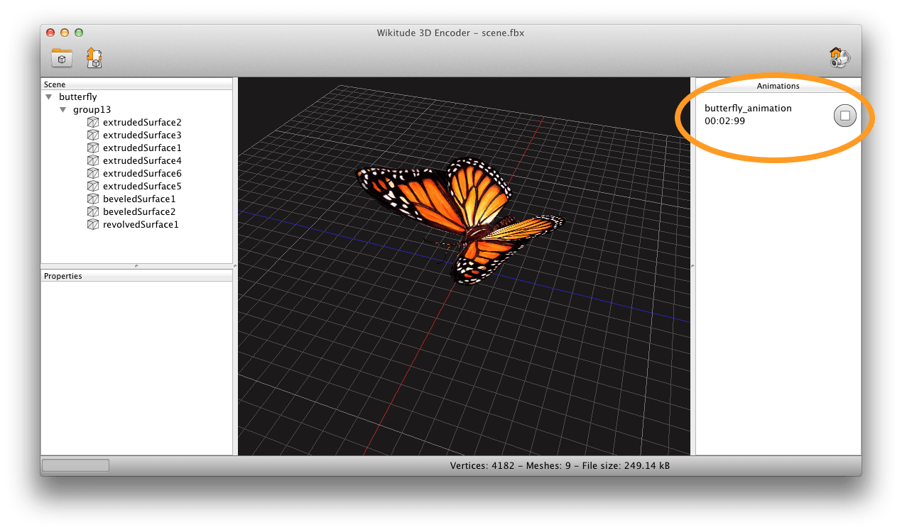

3D Assets Workflow
Prerequisites
- A 3D model in FBX 2013 (.fbx) or Collada (.dae) file format
- Wikitude 3D Encoder for Windows or MacOS X
3D content within Wikitude can only be loaded from so-called Wikitude 3D Format files (.wt3). This is a compressed binary format for describing 3D content, which is optimized for fast loading and handling of 3D content on a mobile devices. You still can use 3D models from your favorite 3D modeling tools (like Autodesk® Maya® or Blender) but need to convert them into wt3 file format. Wikitude offers a desktop application called Wikitude 3D Encoder, which takes over the task of encoding your 3D source file. The Encoder can handle Autodesk® FBX® files (.fbx) and the open standard Collada (.dae) file formats for encoding to .wt3.
This section should give an overview on how to choose the right 3D models for displaying it in Wikitude's augmented reality SDK. As Wikitude is basing 3D support on a converted file format (.wt3) it is good to follow the best practices below.
Input format
Supported 3D model files for encoding it into wt3 files are:
- FBX (.fbx) - max version: FBX 2013
- Collada (.dae)
We recommend using FBX wherever possible as tools support for FBX is widely available. Furthermore Collada allows to include customized attributes that might not be understood by the Wikitude 3D Encoder.
Features you can use in your 3D model source files:
- Static model (made-up of triangles)
- Animations
- Transformation Animations
- Skinning
- Materials
- Phong, Lambert, Blinn
- Transparency
- NURBS (will be tessellated on import)
Features that are not (yet) supported
- Normal Mapping
- Multi Textures
- FBX 2014
Good practice
Use png textures
Textures are stored in png format within wt3 files. While Wikitude 3D Encoder takes care of automatically converting textures to png, it is good practice to use png textures in the source 3D Model file.
Use power of 2 textures
The current rendering hardware on mobile devices requires certain texture attributes if the texture is not a power of 2 textures. This can result in unexpectedly textured models. Additionally using power of 2 textures yields to a better performance when running on the device. A power of 2 textures has a width and height of 2x - like. 64x64, 128x128, and so on.
Validate texture paths
If your opened model appears without textures, very often the texture paths are not set correctly. Make sure your texture paths are valid and accessible. For example check that they reference the texture files in a relative way and that all required textures exist and are accessible.
Keep texture size as low as possible
Keeping texture sizes as low as possible, while maintaining the required details has several benefits. The exported .wt3 file will be smaller and therefore quicker to load over the network or from the application bundle. Additionally it will take up less graphics memory thus freeing up space for additional models or content.
Use only one light
To maintain a good rendering performance each part of your model (node) is only affected by a single light source. You may use multiple lights in the source file but at render time only a single node is selected to affect a mesh part. We make a best guess, utilizing the scene graph to assign a light to the node. If lighting is not required simply remove the lights from your source 3D model file and/or set the corresponding material properties. This helps to speed up rendering.
Resolving problems
3D Model which uses joints (bones) is distorted
Create a master joint where all other joints are attached to.
3D Model shows up correctly in Wikitude 3D Encoder but does not show on the device.
Check that your textures have a reasonable size. Limiting the textures to the lowest size that maintains the required details is recommended.
Textures are missing
Check the error/warning dialog during the import process of the model it will give you detailed information on which textures are problematic. Make sure the texture paths are valid and accessible.
Working with 3D Animations
Quick start
Export a model that contains one or more animations from your preferred 3D modeling tool to a DAE or FBX file. After you load the 3D model into the Wikitude 3D Encoder the animations are displayed in a list on the right side of your application window.

Each row of the list contains the ID of the animation, a control button and the time that passed after you started the animation. Clicking the play button will start the animation from the beginning and play back the animation in the 3D view of the application. The stop button will stop animation and displays the frame, that was drawn last.
Check if your model looks and animates as expected and export it to a wt3 file. You need the IDs of the animations you want to use in your application. The IDs are displayed next to the animation control button (on the screenshot the animation ID is butterfly_animation). In your code you start an animation like this.
// instantiate the model object
var model = new AR.Model("butterfly.wt3");
// instantiate the model animation with the animation id
var animation = new AR.ModelAnimation(model, "butterfly_animation");
// start the animation
animation.start();Export Animations
The Wikitude 3D Encoder supports animation of joints and transformation animations. This includes transformation animations along motion paths.
When exporting the model from the 3D modeling tool you have to bake your animations. As an example Maya bakes all unsupported constraints, including Maya-supported and FBX constraints, into animation curves.
Grouping Animations
Animations will be grouped automatically to a top level node. In order to create two separate animations you need to group them in your modeling tool accordingly.
To illustrate that let's create an example with 3 spheres and 3 cylinders with different translation animations. In the scene graph this example looks like the following:
• sphere1
• sphere2
• sphere3
• cylinder1
• cylinder2
• cylinder3Once the example is exported into a DAE or FBX file and imported into the Wikitude 3D Encoder six separate animations, one for each object, will be generated.
Let's assume we want to group all sphere animations into one animation and all cylinders into a second animation. This can achieved by creating two separate groups. One group containing all spheres and another one containing all cylinders. In the scene graph this is going to look like this:
• all_spheres_group
• sphere1
• sphere2
• sphere3
• all_cylinders_group
• cylinder1
• cylinder2
• cylinder3Once we export this into a DAE or an FBX file and import it into the Wikitude 3D Encoder we would get the desired result: one animation that animates all spheres and another animation animating all cylinders.
Note: Do not group joints, especially when they were already skinned to a mesh.
Known Issues
- Baking animations doesn’t work in Blender as of version 2.66a and 2.67a when exporting the 3D model as DAE file. Reason: Blender 2.66a does not offer a baking option. There is a new option in Blender 2.67a when exporting to Collada DAE files among the Collada Options which is called "Transformation Type". You can bake transformations to one transformation matrix but for some reason the channel is still referring to the separate matrices (translation, rotation, scale) instead of the baked matrix. For this reason the animations will not be encoded on import to the Wikitude 3D Encoder.
- In Blender avoid transformations on bones before you skin them to a mesh and export it to an FBX file.
- Exporting a model (with animations) as FBX from Blender creates additional animations for camera, lights or motion paths. These can be safely ignored.